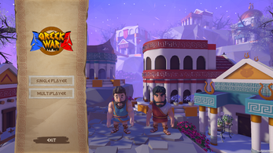
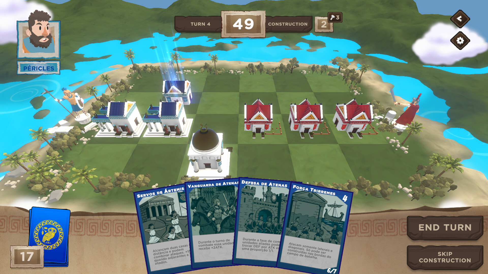

Game Design Document (GDD): Greek War
Visão Geral do Projeto (Elevator Pitch):
Greek War é um jogo de estratégia tática em turnos 3D que combina a astúcia do xadrez com a sagacidade do jogo da velha, tudo ambientado em um campo de batalha inspirado na grandiosidade da Grécia Antiga. Prepare seu baralho, escolha sua civilização e enfrente jogadores do mundo todo em duelos mentais onde cada movimento pode selar a glória... ou a derrota.
Core Loop (Loop Principal)
O Core Loop é focado em alta rejogabilidade e na aplicação estratégica de recursos e unidades a cada turno:
EXPLORAR/GERENCIAR MÃO > APLICAR HABILIDADES/POSICIONAR UNIDADE > SOLUCIONAR DESAFIO TÁTICO > GANHAR CONTROLE DE ÁREA/AVANÇAR À PRÓXIMA SALA/REPETIR.
Plataforma e Target
Plataforma Principal
- Principal: PC (Windows, macOS)
- Potenciais: Consoles (PlayStation, Xbox), Dispositivos Móveis (iOS, Android).
Público-Alvo Primário
- Demografia: Idade 16-17 anos, Estudantes do Ensino Médio.
- Psicografia: Curiosos, competitivos, estratégicos, analíticos e sociais. Buscam dominar sistemas complexos e superar adversários em um ambiente de competição justa.
O público primário valoriza a profundidade tática e a oportunidade de interagir socialmente em plataformas online, buscando a sensação de maestria em sistemas complexos.
Key Features (Pilares da Experiência)
- Mecânica Híbrida Inovadora: Fusão tática de Jogo da Velha (formação de linhas de vitória) e Xadrez (posicionamento e movimento estratégico) em um tabuleiro 6x4.
- Civilizações Únicas e Assimétricas: Escolha entre civilizações como Esparta (força bruta), Atenas (controle/flexibilidade), Tebas (defesa) e Delos (recursos/invocações).
- Sistema de Card Game Integrado: Deck de 25 cartas (unidades e suporte) para construção de baralho (deckbuilding) e gestão de mão.
- Estratégia Profunda Baseada em Posicionamento: O posicionamento das unidades é crucial para formar as linhas de vitória e ativar sinergias de habilidades.
- Experiência Multiplayer Online Competitiva: Duelos um contra um com sistema robusto de matchmaking e ranqueamento.
Fluxo e Mecânicas de Jogo
Estrutura do Jogo
- Tabuleiro: Grid 6x4 dividido em duas áreas.
- Objetivo: Completar uma linha horizontal no tabuleiro com suas unidades.
- Vista: Isométrica.
Regras do Turno (3 Fases)
- 1. Fase de Saque: Compra de 1 carta (completa a mão).
- 2. Fase de Construção:
- Joga cartas da mão para o tabuleiro.
- Custo da carta = número de unidades já no campo (Custo 1 na 1ª rodada é 0).
- Pode substituir unidades após 2 turnos.
- Acumula até 5 pontos de construção.
- Movimentação de unidades ocorre apenas nesta fase.
- 3. Fase de Combate:
- Declara ataques.
- Resolução: ATK do atacante > DEF do defensor = eliminação. Empates não eliminam.
- A resolução é mostrada após a marcação de todos os combates.
Condições de Vitória
- Vitória Primária: Completar uma linha horizontal (em qualquer uma das 4 linhas) no tabuleiro com suas unidades.
- Empate: Nenhum jogador alcançar a vitória após 25 turnos.
Análise SWOT (Game Design)
| Forças |
Fraquezas |
Oportunidades |
Ameaças |
| Conceito Híbrido Único (Jogo da Velha & Xadrez). |
Complexidade das mecânicas pode dificultar a curva de aprendizado. |
Expansão da base de jogadores com modos de jogo adicionais (Campanha). |
Forte concorrência no mercado de jogos de estratégia online e TCGs. |
| Imersão na Grécia Antiga e assimetria das Civilizações. |
Pode limitar o apelo a um público mais nichado. |
Atualizações regulares (conteúdo, eventos) e portabilidade para Mobile/Console. |
Problemas técnicos (estabilidade do servidor) e alto custo de manutenção. |

